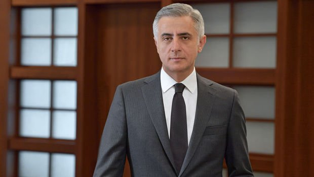
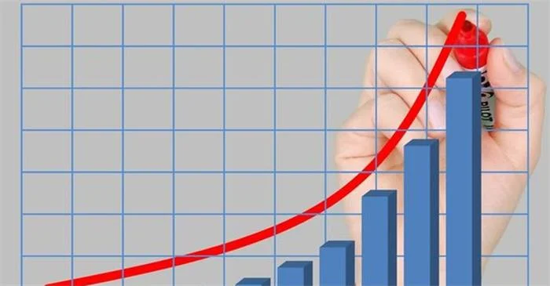
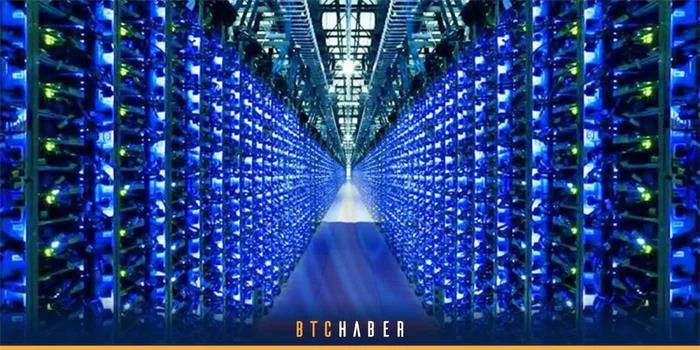
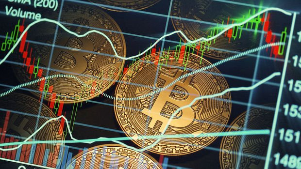
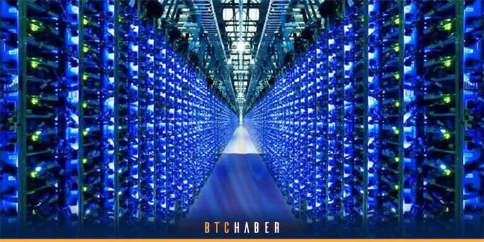
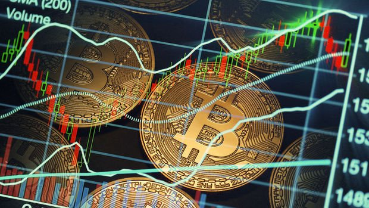

Neler oldu?
FİNANS HABERLERİ
1 / 6
![Siemens Mobility, Mısır ile 8,1 milyar euro değerinde yüksek hızlı tren anlaşması imzaladı. Siemens Mobility ile Mısır Ulusal Tüneller Otoritesi (NAT) arasında 2 bin kilometrelik yüksek hızlı demir yolları inşa etmek için 8,1 milyar euro değerinde sözleşme imzaladı. Siemens'ten yapılan açıklamada, Siemens Mobility, Orascom Construction ve Arab Contractors'tan oluşan konsorsiyumun NAT ile 15 yıl boyunca demir yollarının inşası ve bakımı için sözleşme imzaladığı belirtildi. Sözleşme kapsamında Siemens Mobility, Mısır'a 41 yüksek hızlı tren, 94 bölgesel tren ve 41 yük treni sağlayacak. Ayrıca, 15 yıl boyunca hattın ve trenlerin bakım ve onarımdan sorumlu olacak. Bunun Siemens'in 175 yıllık tarihindeki en büyük sipariş olduğu belirtildi.](img/SiemensMısır.jpg)
Siemens ile Mısır arasında hızlı tren anlaşması!
2 / 6
![Ekonomide gözler yeni haftada art arda açıklanacak büyüme, ihracat ve enflasyon rakamlarına odaklanacak. Yeni haftadan itibaren ekonomide veri gündemi daha da hareketlenecek. Türkiye İstatistik Kurumu (TÜİK), 31 Mayıs Salı günü bu yılın birinci çeyreğine ilişkin büyüme rakamlarını açıklayacak. Ocak-mart dönemine ilişkin gayrisafi yurt içi hasıla (GSYH) verileri saat 10.00'da duyurulacak. Hazine ve Maliye Bakanı Nureddin Nebati de sanayi üretimi, ihracat ve istihdamdaki olumlu gelişmelere dikkati çekerek, öncü göstergelerin, büyümenin 2022'nin ilk çeyreğinde yıllık yüzde 6-7 gerçekleşeceğine işaret ettiğini belirtmişti. Merkez Bankası Başkanı Şahap Kavcıoğlu da Türkiye'nin ilk çeyrekte yüzde 7'ye yakın büyüme gösterecek nadir ülkelerden biri olacağını dile getirmişti. Türkiye ekonomisi, 2021'in son çeyreğinde yüzde 9,1 ve tamamında yüzde 11 büyüme kaydetmişti.](img/EkonomiGündemi.jpg)
Yeni haftada ekonomi gündemi yoğun geçecek!
3 / 6

Garanti BBVA Genel Müdürü Baştuğ: %40 sermaye getirisi ve %70 enflasyon sürdürülebilir değil!
4 / 6
![InvestAZ Araştırma Direktörü Dr. Tuğberk Çitilci, süper getirili tahvil söylentilerinin piyasalarda etkili olduğunu, ancak henüz bunun vakti olduğunu düşünmediğini kaydetti. Çitilci, piyasaya sabah saatlerinden itibaren yüksek getirili bir tahvilin çıkarılacağını ilişkin fısıldama olduğuna değinerek, 'Enflasyon + %10 konuşuluyor. Bu akşam Cumhurbaşkanlığı Kabine Toplantısı var. Toplantı sonrasında Cumhurbaşkanı Recep Tayyip Erdoğan'ın bu enstrümanı açıklayacağına ilişkin piyasada çıkan bir söylenti etkisi bulunuyor. Bu olur mu veyahut da olması durumunda da bazı soru işaretleri var. Bu enstrümanın çıkması durumunda, Kur Korumalı Mevduat'ın sonu olacak gibi bir unsur. KKM'nin sonbahara kadar devam edeceği dikkate alındığında, neden farklı enstrümanlar KKM havuzunda biriken TL'nin farklı alanlara yönlendirilmesi sorusu akla geliyor. KKM'nin öncelikli olduğu düşünüldüğünde bu ihtimali zayıf görüyorum.' diye konuştu.](img/SuperGetiriliTahvil.jpg)
'Süper Getirili Tahvil' söylentileri piyasalarda etkili oluyor!
5 / 6
![CoinShares'in raporuna göre, Luna krizinin ardından Bitcoin'de yaşanan düşüş yüksek alım iştahı olarak değerlendirilirken, Bitcoin'e yapılan yatırımlar yüzde 65 arttı. Bitcoin’de düşüş devam ediyor. Olumlu haber akışları zaman zaman piyasaya merhem olsa da Bitcoin 30 bin doların üzerinde henüz kalıcı olamadı. Bybit Türkiye Araştırma Müdürü Beste Naz Süllü, Bitcoin’deki değer kaybını iki sebebe bağladı: “Bitcoin’deki düşüşü Luna olayı öncesi ve Luna olayı sonrası olarak iki zamana ayırabiliriz. Nasdaq ile korelasyonun artması ve Fed stresi ile birlikte Amerikan endekslerinin de aşağı gelmesi Bitcoin’i aşağı çekti. Fakat biz bu süreci 40 binlere kadar fiyatlamıştık. Daha sonra kopan Luna krizi Bitcoin’de çok daha sert satışların gelmesine neden oldu. CoinShares her hafta rapor yayımlıyor. Rapora göre; kripto para piyasasında düşüş kaydedilen dönemde Bitcoin’e yüzde 65 yatırım yapıldı. Yatırımcılar Luna krizinden kaynaklı yaşanan bu düşüşü Bitcoin’de yüksek alım iştahı olarak değerlendirdi”](img/Bitcoine.jpg)
Piyasa kan kaybederken Bitcoin’e yatırımlar yüzde 65 arttı!
6 / 6
![Teknoloji devi Microsoft'un kurucusu Bill Gates, kripto para hakkında açıklamalar yaptı. Sosyal medya platformu Reddit'te perşembe düzenlenen Bana İstediğini Sor (Ask Me Anything) etkinliğine katılan teknoloji milyarderi, hiçbir kripto para birimine yatırım yapmadığını söyledi. 'Değerli getirileri olan şeylere yaptırım yapmayı seviyorum' diyen Gates, şöyle konuştu: Şirketlerin değeri, harika ürünleri nasıl ürettiklerine bağlı. Kripto varlıkların değeriyse bir başkasının, onlar için ödemeyi kabul ettiği tutarla ölçülüyor. Yani diğer yatırımlar gibi topluma katkı sağlamıyor.](img/BillGates.jpg)
Bill Gates neden kripto paraya yatırım yapmadığını açıkladı!

![Almanya’da mahkeme, kablosuz teknoloji patentlerinin ihlaliyle ilgili bir dava kapsamında internet bağlantısı özelliği olan Ford otomobillerine ülke çapında satış ve üretim yasağı getirdi. Münih Bölge mahkemesi, Japonya’nın ulusal patent lisanslama firması IP Bridge tarafından 4G mobil iletişim patentlerinin 8 sahibi adına açtığı davayı karara bağladı. Mahkeme, Ford’un kablosuz teknoloji patentlerinin sahibi davacılarla bir anlaşmaya varmaması halinde Almanya’da araç satamayacağına veya üretemeyeceğine karar verdi. Ford’un davacılarla bir anlaşmaya varamaması durumunda temyize tabi olan karar iki hafta içinde uygulanabilecek. ABD merkezli otomobil üreticisi Ford, konuya ilişkin açıklamasında, davanın nedenin uzun süreli evrim (LTE) ağları için standart temel patentlerin lisanslanması olduğunu belirtti. Açıklamada, Alman mahkemesinin yazılı kararı henüz alınmadığı için bir değerlendirme yapılmayacağı aktarıldı.](img/Almanya’daFord’a.jpg)
![Rusya’nın Ukrayna işgali, Uzak Doğu’da tekrar yüzünü gösteren COVID-19 karantinaları, tedarik zinciri darboğazları ve yüksek enflasyon derken Amerikan borsaları bir süredir düşüş yaşıyor. Yalnızca Amerikan borsaları da değil, Avrupa ve kripto para borsaları da düşüşte. Fakat paniğe hiç gerek yok! Yükselişler kadar düşüşler de borsaların doğasında vardır. Ayrıca yatırım dünyasında, yaşanan her krizin farklı bir açıdan da bir fırsat olduğu düşünülür. Peki, böyle bir ortamda yatırımlarını korumak için ne yapabilirsin? Hazırsan biraz bunları konuşalım. ✋ Uzak Durmakta Fayda Var: “Borsayı Zamanlamak” 👍 Denemekten Zarar Gelmez: “Borsada Zaman Geçirmek” 🧮 Rakamlarla Örnek Vermek Gerekirse… 🤔 Peki, Uzmanlar Ne Diyor? Ne Yapıyor? ✍️ Son Olarak… Böyle zamanlarda bir yatırımcı olarak yatırımını korumak için doğru bir strateji izlemek her şeyden önemli.](img/YatırımStratejisi.jpg)

![Pazarlamacılar artık tıklama başına maliyet (TBM) veya işlem başına maliyet (EBM) gibi ara metriklere odaklanmak zorunda kalmıyor. Bunun yerine, teklif stratejilerini işletme önceliklerine (örneğin, kârı veya geliri artırma) daha uygun olacak şekilde güncelleyebiliyorlar. Buradaki en önemli unsur ise yüksek değere sahip müşterilere daha etkili şekilde ulaşabilmek için birinci taraf verilerini kullanmak. Bu süreçte, kampanyanın daha stratejik hedeflere ulaşabilmesi için kâr marjları gibi belirli dönüşüm değeri verilerinin sisteme aktarılması gerekiyor. Bazı en gelişmiş “değere dayalı teklif” stratejilerinde pazarlamacılar, yaşam boyu değer ayarlaması yapılan verileri ekleyebiliyor.](img/MüşteriPortföyünü.jpg)

Haftalık bazda hangi yatırım aracı ne kazandırdı?
Almanya’da Ford’a patent anlaşmazlığında satış yasağı!
Borsalar düşerken uygulanabilecek birkaç yatırım stratejisi!

Rusya, Bitcoin Madenciliğini Kontrol Altına Alacak!
Müşteri portföyünü genişletmenin yeni yolları!

Piyasaya dönen Luna'da baş döndüren hareketler!
×